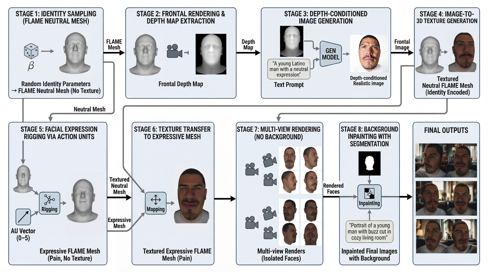
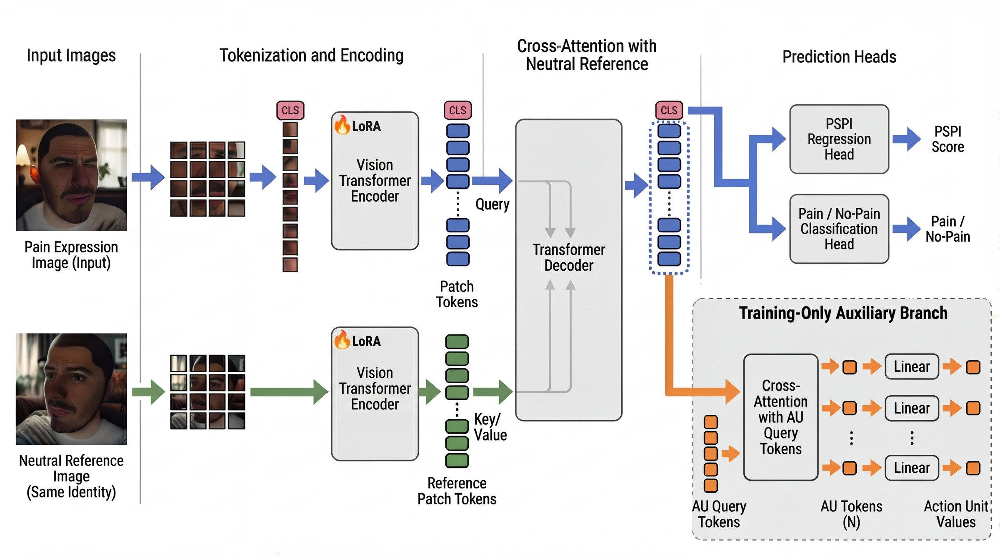

- 82,500 synthetic face images
- 2,500 unique identities
- 25,000 pain expression heatmaps
- 3 viewpoints per expression
- Paired neutral & pain images
- AU + PSPI annotations
- Balanced by age, gender, ethnicity
Automated pain assessment from facial expressions is crucial for non-communicative patients, such as those with dementia. Progress has been limited by two challenges: (i) existing datasets exhibit severe demographic and label imbalance due to ethical constraints, and (ii) current generative models cannot precisely control facial action units (AUs), facial structure, or clinically validated pain levels.
We present 3DPain, a large-scale synthetic dataset specifically designed for automated pain assessment, featuring unprecedented annotation richness and demographic diversity. Our three-stage framework generates diverse 3D meshes, textures them with diffusion models, and applies AU-driven face rigging to synthesize multi-view faces with paired neutral and pain images, AU configurations, PSPI scores, and the first dataset-level annotations of pain-region heatmaps. The dataset comprises 82,500 samples across 25,000 pain expression heatmaps and 2,500 synthetic identities balanced by age, gender, and ethnicity.
We further introduce ViTPain, a Vision Transformer based cross-modal distillation framework in which a heatmap-trained teacher guides a student trained on RGB images, enhancing accuracy, interpretability, and clinical reliability. Together, 3DPain and ViTPain establish a controllable, diverse, and clinically grounded foundation for generalizable automated pain assessment.

Our three-stage pipeline generates diverse, controllable synthetic pain faces:

ViTPain is a reference-guided Vision Transformer designed for automated pain assessment:
pip install huggingface-hub
huggingface-cli download xinlei55555/ViTPain \
vitpain-epoch=141-val_regression_mae=1.859.ckpt \
--local-dir ./checkpoints/python scripts/run_unbc_5fold_cv.py \
--pretrained_checkpoint ./checkpoints/vitpain-epoch=141-val_regression_mae=1.859.ckpt \
--data_dir datasets/UNBC-McMaster \
--model_size large_dinov3 \
--batch_size 100 --max_epochs 50 \
--au_loss_weight 0.1 \
--use_weighted_sampling --use_neutral_reference \
--output_dir experiment/unbc_5fold_cvpython scripts/evaluate_unbc.py experiment/unbc_5fold_cv@article{lin2025pain,
title={Pain in 3D: Generating Controllable Synthetic Faces for Automated Pain Assessment},
author={Lin, Xin Lei and Mehraban, Soroush and Moturu, Abhishek and Taati, Babak},
journal={arXiv preprint arXiv:2509.16727},
year={2025}
}This work was supported by the KITE Research Institute at the University Health Network and the University of Toronto. We thank the members of the Taati Lab for their valuable feedback and discussions.
The UNBC-McMaster Shoulder Pain Expression Archive Database was used for evaluation in this work. We gratefully acknowledge the original dataset creators for making it available to the research community.